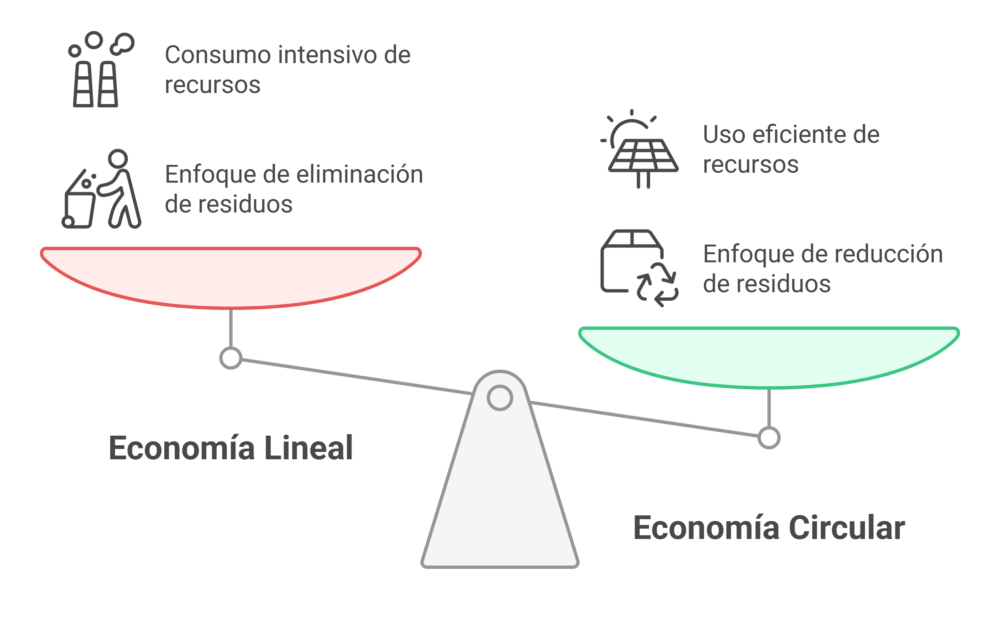

UD1 Economía lineal y circular
Descargar estos apuntes
Índice
Introducción
La transición desde una economía lineal hacia una economía circular es un cambio crucial para la sostenibilidad global. Este documento desarrolla en profundidad los conceptos clave de ambos modelos económicos, sus implicaciones en el medioambiente y cómo la digitalización puede facilitar esta transición.
La economía lineal es un modelo de producción y consumo que tiene como objetivo la obtención de beneficios económicos sin tener en cuenta el impacto medioambiental. En este modelo, los recursos naturales se extraen, se transforman en productos y se desechan tras su uso.
La economía circular, por el contrario, es un modelo de producción y consumo que tiene en cuenta el impacto medioambiental y busca la sostenibilidad del sistema productivo. En este modelo, los recursos naturales se reutilizan, se reciclan y se reintroducen en el ciclo productivo, reduciendo así la generación de residuos y el consumo de recursos naturales.

Economía Lineal
La economía lineal es un modelo de producción tradicional basado en el principio "extraer-producir-desechar". Se caracteriza por:
- Dependencia de recursos naturales finitos
- Generación de grandes volúmenes de residuos.
- Bajo incentivo para el reciclaje o reutilización.
En la economía lineal, los recursos naturales se extraen del medio ambiente, se transforman en productos, se consumen y se desechan tras su uso.
Las etapas o fases de la economía lineal son las siguientes:
- Extracción de recursos naturales: en esta etapa se extraen los recursos naturales del medio ambiente (minerales, petróleo, agua, etc.). No se tiene en cuenta el impacto ambiental de esta extracción.
- Producción de productos: en esta etapa se transforman los recursos naturales en productos.
- Distribución: en esta etapa los productos son distribuidos a los consumidores.
- Consumo de productos: en esta etapa los productos son consumidos por los usuarios. El enfoque principal es el consumo inmediato y desechable, sin considerar el ciclo de vida prolongado de los productos o posible reutilización.
- Generación y eliminación de residuos: en esta etapa los productos son desechados tras su vida útil. Son eliminados en vertederos o incinerados.
Modelos basados en economía líneal
- Fabricación convencional de productos: La producción de bienes se basa en la extracción de recursos naturales, su transformación y posterior venta al consumidor final.
- Obsolescencia programada: Los productos son diseñados para tener una vida útil limitada, lo que obliga a los consumidores a adquirir nuevos productos con frecuencia.
- Modelos de uso único: Productos de un solo uso, como plásticos desechables, que generan grandes cantidades de residuos.
- Consumo masivo: La producción en masa de productos fomenta el consumo excesivo y la generación de residuos. Ejemplos son la moda rápida y campañas de marketing agresivas como el Black Friday.
Ejemplos en los ciclos formativos de informática:
- Ordenadores desechados tras su obsolescencia: En muchas empresas, los equipos informáticos siguen un modelo lineal en el que, tras unos años de uso, se sustituyen por nuevos sin considerar la reutilización de componentes.
- Cartuchos de tinta y toners: Estos consumibles suelen desecharse tras su uso sin aprovechar sistemas de reciclaje o recarga.
- Placas base y hardware obsoleto: Muchas placas y periféricos quedan inservibles y no se reciclan correctamente, aumentando la cantidad de residuos electrónicos.
- Cableado estructurado: En proyectos de redes, muchas veces los cables viejos no se reutilizan y se descartan, generando un impacto ambiental considerable.
- Software privativo con licencias limitadas: Algunos programas requieren nuevas licencias tras un período de uso, incentivando la compra en lugar del reaprovechamiento de software libre o de código abierto.
En conclusión, la economía lineal es un modelo de producción y consumo que tiene un impacto negativo en el medio ambiente, ya que genera una gran cantidad de residuos y consume una gran cantidad de recursos naturales.
Las causas del modelo de economía lineal son la falta de conciencia medioambiental, la búsqueda de beneficios económicos a corto plazo y la falta de incentivos para la reutilización y el reciclaje.
Economía Circular
La economía circular propone un cambio de paradigma, apostando por la reutilización, reciclaje y reintegración de materiales en el ciclo productivo. Es un modelo de producción y consumo que tiene en cuenta el impacto medioambiental y busca la sostenibilidad del sistema productivo.
Reciclar, reutilizar y reducir son las 3R de la economía circular. Estas tres acciones son fundamentales para reducir la generación de residuos y el consumo de recursos naturales. Sin embargo, con el tiempo, se han añadido otras "R" como reparar, rediseñar, redistribuir y recuperar, ampliando el enfoque hacia un modelo más sostenible y responsable. Se ha llegado a las 9R de la economía circular: repensar, rediseñar, refabricar, reparar, redistribuir, reducir, reutilizar, reciclar y recuperar.
¿Sabes cuáles son las 9R de la economía circular?
Las 9R de la economía circular son:
- Repensar: Cambiar la forma en que pensamos sobre el consumo y la producción.
- Rediseñar: Crear productos y servicios que sean sostenibles y fáciles de reciclar.
- Refabricar: Reacondicionar productos para darles una segunda vida.
- Reparar: Arreglar productos en lugar de desecharlos.
- Redistribuir: Compartir o donar productos en lugar de tirarlos.
- Reducir: Disminuir el consumo de recursos y energía.
- Reutilizar: Dar un nuevo uso a los productos antes de reciclarlos.
- Reciclar: Transformar materiales usados en nuevos productos.
- Recuperar: Extraer materiales valiosos de residuos.
Este enfoque pretende, por tanto, reducir la generación de residuos y el consumo de recursos naturales, fomentando la reutilización, el reciclaje y la reintroducción de los recursos en el ciclo productivo. Además de la innovación y la colaboración entre los diferentes agentes económicos.
Las etapas o fases de la economía circular son las siguientes:
- Ecodiseño de productos: en esta etapa se diseñan productos duraderos que sean fáciles de reciclar y reutilizar, y considerando el impacto ambiental de su producción. Se busca la sostenibilidad desde el inicio del ciclo de vida del producto.
- Uso eficiente de recursos en la producción/reelaboración: en esta etapa se producen los productos diseñados, aplicando una reducción de desperdicios en la fabricación, y limitando la utilización de sustancias tóxicas y contaminantes. Minimización del impacto ambiental en la producción a través de la eficiencia energética y la reducción de emisiones, utilizando energías renovables y materias primas sostenibles.
- Distribución: Se busca una distribución eficiente y sostenible de los productos, compartida, minimizando el uso de recursos y emisiones durante el transporte. Se fomenta la logística inversa, donde los productos devueltos o no vendidos son reacondicionados o reciclados.
- Consumo de productos: se busca el consumo de producción local y sostenible, fomentando la economía colaborativa y el uso compartido de productos. Se promueve la educación del consumidor para que tome decisiones responsables y sostenibles.
- Reparación/Reutilización de productos: en esta etapa los productos son reutilizados tras su uso. Le damos una segunda vida a los productos.
- Reciclaje de productos: los productos son reciclados y reintroducidos en el ciclo productivo. Transformación de residuos en nuevos materiales.
Modelos basados en economía circular
- Economía de la funcionalidad: En lugar de vender productos, se ofrecen servicios relacionados con su uso. Por ejemplo, en lugar de vender coches, se ofrece un servicio de movilidad compartida.
- Economía colaborativa: Plataformas digitales que permiten el intercambio y la reutilización de productos entre usuarios. Ejemplos son Airbnb, Uber o Wallapop.
- Ecodiseño: Diseño de productos teniendo en cuenta su ciclo de vida completo, desde la extracción de materias primas hasta su reciclaje. Se busca minimizar el impacto ambiental y maximizar la reutilización de materiales.
- Sistemas de logística inversa: Procesos que permiten recuperar productos al final de su vida útil para su reutilización o reciclaje. Por ejemplo, la recogida de envases y embalajes para su reciclaje.
- Economía regenerativa: Modelos que buscan regenerar los recursos naturales y restaurar los ecosistemas. Por ejemplo, la agricultura regenerativa que mejora la salud del suelo y la biodiversidad.
Ejemplos en los ciclos formativos de informática:
- Reacondicionamiento de equipos informáticos: En lugar de desechar ordenadores antiguos, estos pueden ser actualizados con nuevos componentes y utilizados en centros educativos o donados a organizaciones sin ánimo de lucro.
- Uso de software libre: Fomentar el uso de sistemas operativos y aplicaciones de código abierto evita la obsolescencia programada y permite reutilizar equipos con menos recursos.
- Reciclaje de componentes electrónicos: Recuperación de piezas como discos duros, memorias RAM o tarjetas gráficas para ser reutilizados en otros dispositivos.
- Optimización del cableado estructurado: En instalaciones de redes, reutilizar cableado en buen estado y aprovechar materiales reciclables reduce el desperdicio.
- Impresión 3D con materiales reciclados: Uso de filamentos reciclados para la creación de piezas de repuesto y soportes en proyectos tecnológicos.
Por otro lado, las causas del modelo de economía circular son la conciencia medioambiental, la búsqueda de beneficios económicos a largo plazo y los incentivos para la reutilización y el reciclaje.
Las consecuencias del modelo de economía circular son la reducción de la generación de residuos, la protección del medio ambiente y la conservación de los recursos naturales.
Comparativa entre Economía Lineal y Circular
| Característica |
Economía Lineal |
Economía Circular |
| Uso de recursos |
Intensivo |
Optimizado |
| Generación de residuos |
Alta |
Baja |
| Impacto ambiental |
Negativo |
Reducido |
| Vida útil del producto |
Corta |
Extendida |
| Consumo energético |
Alto |
Eficiente |
Acuerdos/Medidas
A nivel mundial, se han adoptado una serie de acuerdos y medidas para fomentar la economía circular y reducir el impacto medioambiental de la economía lineal.
Algunos de los acuerdos y medidas más importantes son los siguientes:
- Objetivos de Desarrollo Sostenible (ODS): los ODS son un conjunto de objetivos adoptados por la ONU para fomentar el desarrollo sostenible a nivel mundial. Entre los ODS se encuentran la reducción de la pobreza, la protección del medio ambiente y la promoción de la igualdad de género. En concreto, el ODS 12 se refiere a la producción y el consumo sostenibles, y promueve la economía circular.
- Estrategia Europea de Economía Circular: la UE ha adoptado una estrategia de economía circular para fomentar la reutilización, el reciclaje y la reducción de residuos en Europa.
- Ley de Residuos y Suelos Contaminados: en España se ha aprobado una ley de residuos y suelos contaminados para fomentar la economía circular y reducir el impacto medioambiental de la economía lineal. La ley es la Ley 22/2011, de 28 de julio, de residuos y suelos contaminados.
- Acuerdo de París: el Acuerdo de París es un acuerdo internacional para reducir las emisiones de gases de efecto invernadero y luchar contra el cambio climático. En concreto sobre la economía circular, el Acuerdo de París promueve la reducción de la generación de residuos y el consumo de recursos naturales.
- Protocolo de Kioto: el Protocolo de Kioto es un acuerdo internacional para reducir las emisiones de gases de efecto invernadero y luchar contra el cambio climático. En concreto sobre la economía circular, el Protocolo de Kioto promueve la reutilización, el reciclaje y la reducción de residuos.
- Acuerdo de Copenhague: el Acuerdo de Copenhague es un acuerdo internacional para reducir las emisiones de gases de efecto invernadero y luchar contra el cambio climático.
Planes/Acciones
Para fomentar la economía circular y reducir el impacto medioambiental de la economía lineal, es necesario adoptar una serie de planes y acciones a nivel local, nacional e internacional.
Algunos de los planes y acciones más importantes son los siguientes:
- Plan Nacional de Residuos: en España se ha adoptado un Plan Nacional de Residuos para fomentar la economía circular y reducir el impacto medioambiental de la economía lineal.
- Plan de Economía Circular: en España se ha adoptado un Plan de Economía Circular para fomentar la reutilización, el reciclaje y la reducción de residuos en el país.
- Plan de Acción de Economía Circular: en la UE se ha adoptado un Plan de Acción de Economía Circular para fomentar la economía circular en Europa.
Ventajas de los modelos de producción de la EC sobre la EL
La economía circular presenta múltiples ventajas sobre la economía lineal, entre las que destacan:
- Reducción del desperdicio: La EC permite reutilizar materiales y productos, disminuyendo la cantidad de residuos generados.
- Ahorro de recursos naturales: Se minimiza la extracción de materias primas, prolongando la vida útil de los recursos disponibles.
- Mayor eficiencia energética: Los procesos de reciclaje y reutilización requieren menos energía en comparación con la producción desde materias primas vírgenes.
- Fomento de la innovación y nuevas oportunidades de negocio: La EC impulsa el desarrollo de modelos de negocio sostenibles, como la reparación, el reacondicionamiento y la economía colaborativa.
- Mejora en la gestión de costos: Las empresas pueden reducir costes a largo plazo mediante el uso eficiente de los materiales y la reducción de desperdicios.
Mejora de la sostenibilidad del sistema productivo
La economía circular contribuye significativamente a la sostenibilidad del sistema productivo mediante:
- Disminución de la contaminación: Al reciclar y reutilizar, se reducen las emisiones de CO₂ y la acumulación de residuos en vertederos.
- Extensión del ciclo de vida de los productos: Se evita el modelo de consumo basado en la obsolescencia programada, promoviendo productos duraderos y reparables.
- Uso de energías renovables: La EC fomenta el empleo de fuentes de energía sostenibles, reduciendo la dependencia de combustibles fósiles.
- Creación de empleo verde: Los nuevos modelos de producción basados en la circularidad generan oportunidades laborales en sectores emergentes, como la gestión de residuos y el ecodiseño.
Comparativa de los modelos en relación con su impacto medioambiental y los ODS
Los Objetivos de Desarrollo Sostenible (ODS) son un conjunto de objetivos adoptados por la ONU para fomentar el desarrollo sostenible a nivel mundial. Entre los ODS se encuentran la reducción de la pobreza, la protección del medio ambiente y la promoción de la igualdad de género.
La economía circular está alineada con los Objetivos de Desarrollo Sostenible (ODS) establecidos por la ONU, especialmente en los siguientes aspectos:
| Característica |
Economía Lineal |
Economía Circular |
Relación con los ODS |
| Uso de recursos |
Intensivo |
Optimizado |
ODS 12: Producción y consumo responsables |
| Generación de residuos |
Alta |
Baja |
ODS 13: Acción por el clima |
| Impacto ambiental |
Negativo |
Reducido |
ODS 14 y 15: Vida submarina y ecosistemas terrestres |
| Vida útil del producto |
Corta |
Extendida |
ODS 9: Industria, innovación e infraestructura |
| Consumo energético |
Alto |
Eficiente |
ODS 7: Energía asequible y no contaminante |
La adopción de modelos de economía circular no solo beneficia a las empresas y consumidores, sino que también representa una estrategia clave para mitigar el cambio climático y proteger los ecosistemas del planeta.
Relación con la Digitalización
La digitalización juega un papel clave en la transformación hacia una economía circular, permitiendo la optimización de procesos y la reducción del impacto ambiental. Algunas de las tecnologías más relevantes son:
-
Big Data e IoT (Internet de las Cosas): permiten la recopilación y análisis de datos en tiempo real para optimizar el uso de recursos y predecir el ciclo de vida de los productos. Por ejemplo, en la gestión de residuos, el IoT ayuda a optimizar rutas de recolección y minimizar desperdicios.
-
Blockchain: garantiza la trazabilidad de los materiales reciclados y reutilizados, asegurando que los productos mantengan su calidad y origen sostenible. Esta tecnología también permite modelos de economía compartida más eficientes, como el alquiler y la reutilización de productos.
-
Impresión 3D: permite fabricar piezas y productos bajo demanda utilizando materiales reciclados o biodegradables, reduciendo la necesidad de producción en masa y el desperdicio de material.
-
Inteligencia Artificial (IA): se utiliza para mejorar la clasificación y el procesamiento de residuos mediante algoritmos avanzados que pueden identificar materiales reciclables de manera automática.
-
Plataformas digitales y economía colaborativa: aplicaciones y plataformas permiten el intercambio de productos usados, la reparación colaborativa y el consumo responsable, reduciendo la demanda de nuevos productos y fomentando la reutilización.
Gracias a estas innovaciones, la economía circular puede integrarse de manera más eficiente en los procesos productivos y de consumo, promoviendo un desarrollo sostenible basado en la optimización de recursos y la reducción de residuos.
Casos Prácticos y Ejemplos
- IKEA: ha implementado estrategias de reciclaje de muebles y materiales sostenibles.
- Apple: desarrollo del robot "Daisy" para desmontar iPhones y recuperar materiales reutilizables.
- Ellen MacArthur Foundation: promoción de la economía circular a nivel global.
Conclusiones
Ideas principales a recordar
- La economía lineal es un modelo de producción y consumo que tiene un impacto negativo en el medio ambiente.
- La economía circular es un modelo de producción y consumo que tiene en cuenta el impacto medioambiental y busca la sostenibilidad del sistema productivo.
- La economía circular presenta múltiples ventajas sobre la economía lineal, como la reducción de residuos, el ahorro de recursos naturales y la mejora de la sostenibilidad del sistema productivo.
- La digitalización juega un papel clave en la transformación hacia una economía circular, permitiendo la optimización de procesos y la reducción del impacto ambiental.